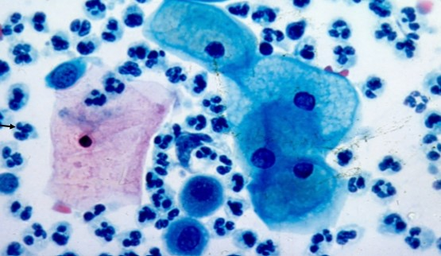
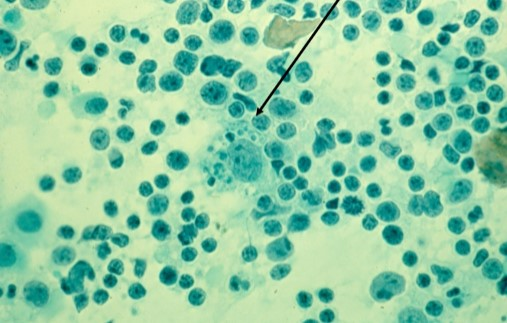
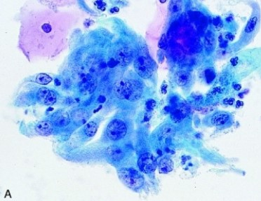
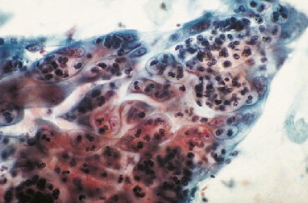
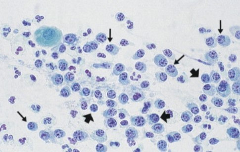
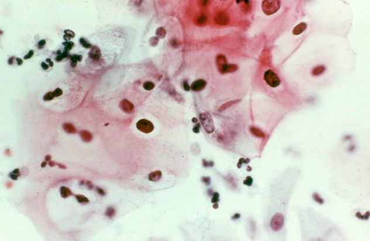
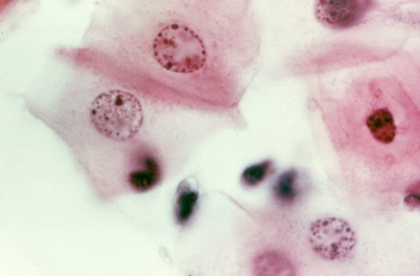

Inflammatory Changes
On This Page
Inflammatory Terms
- These descriptions are often used to describe clinical manifestation of inflammation:
- Tumor: swelling due to fluid build-up
- Calor: localized increase in temperature
- Rubor: redness of mucosa
- Dolor: pain and itching
- Odor: purulent discharge due to cell destruction and organisms
Inflammation Types
Acute Inflammation
- Initial response to injury
- Short term inflammatory response that lasts for a few minutes to days after injury or infection has occurred
- Edema build-up of fluid and plasma proteins
- Pattern consists of mostly polymorphonuclear leukocytes, most commonly neutrophil
- Tends to be degenerated cells and fibrinous material
- Pattern consisting of numerous neutrophils, obscuring epithelial cells called “acute inflammatory exudate”
Chronic Inflammation
- Occurs after acute phase has subsided and typically has a longer duration
- More common pattern associated with tissue damage
- Pattern consists mainly of lymphocytes and macrophages alongside plasma cells
- Laying down of connective tissue occurs


Granulomatous Inflammation
- Less commonly observed
- Best recognized histologically
- Found in specific conditions such as tuberculosis, sarcoidosis, Cat Scratch disease, and foreign body reaction
- Pattern is epithelioid appearing macrophages surrounded by lymphocytes and plasma cells
Cytologic Patterns
- Mild, moderate, marked (severe) are terms used to describe the number of inflammatory cells present
- The cell response is described in terms of “reactive” and “degenerative” changes
- These changes fall under 1991 TBS as "BCC" and 2001/2014 TBS as "NILM"
Nuclear Features
- Most important feature for distinguishing from abnormal changes
- Compare to normal intermediate cell nucleus
- Increases 1.5-2.5 times normal intermediate nucleus
Reactive Changes
- Nuclear enlargement due to fluid absorption
- Typically no overlapping
- Bi and multi-nucleation
- Vacuolization
- Increases N:C ratio
- Less than twice intermediate cell nucleus size
- Anisonucleosis (variation in size from nucleus to nucleus
- Decreases nuclear staining intensity (chromatolysis)
- Fine and pale chromatin, mild hyperchromasia
- May be enlarged and hyperchromatic (mimics SIL)
Degenerative Changes
- Karyopyknosis: shrinking of the nucleus, becomes dark with no recognizable chromatin pattern
- Karorrhexis: break up of the nucleus into oval and round pieces
- Karyolysis: lysing of the nucleus leaving a “ghost” of nucleus behind
- Nuclear vacuolization: usually occurs from rapid cell death, may be single or multiple
- Stripped nuclei: separation of nucleus from cytoplasm
- Minimal irregularity of nuclear membrane
- Ranges from round and uniform to minimal wrinkled
- Chromatin clumps round “mercury beads”, dysplasia would be angular
- Prominence of nucleoli, usually lack of nucleoli in dysplasia
Cytoplasmic Changes
- Loss of cytoplasm- frayed, ragged, moth eaten, loss of cilia
- Well defined borders
- Vacuolization causes soap bubble appearance
- Alterations in staining intensity (less intense staining)
- Pseudoeosinophilia and orangeophilia
- Hypertrophy: all over increase in size
- Polychromasia: variety of staining reactions
- Per-nuclear halos: shrinking of edematous nucleus with fixation
- Halo is poorly defined, space less than width of intermediate cell nucleus
- HPV associated koilocytes are main differential
Endocervical Cells
Nucleus
- Increase in size to 2.5x normal intermediate cell nucleus
- Maintains shape but anisonucleosis
- Multinucleation common
- Minimal distortion of architectural arrangements
- Vacuolization
- Prominent chromocenters
- Frequent nucleoli
Cytoplasm
- Cytomegaly
- Ill-defined cell borders
- Degenerated cytoplasm leads to naked nucleus
- Ciliacytophthoria: detachment of cilia with terminal bar
- Vacuoles with neutrophils (leukophagocytosis)

Background
- Dirty background
- Severe inflammation associated with protein rich exudate
- Finely granular protein with fibrin strands
- Mucus in background
- Bacteria may be present
- Pattern is similar to tumor diathesis
Key Points
- Slight nuclear enlargement but less than 2x intermediate cell nucleus
- Smooth nuclear borders
- Fine pale chromatin and conspicuous nucleoli
- Mild hyperchromasia, may be dark
- Inflammatory halos observed
- Degenerated and vacuolated
- Polychromasia, pseudoeosinophilia and orangeophilia
- Dirty background with granular protein debris, fibrin, and neutrophils
- Microorganisms may or may not be present
Images




References
- Author. Title of article. Journal Name. Year;Volume(Issue):Pages.
- Author. Title of second article. Journal Name. Year;Volume(Issue):Pages.